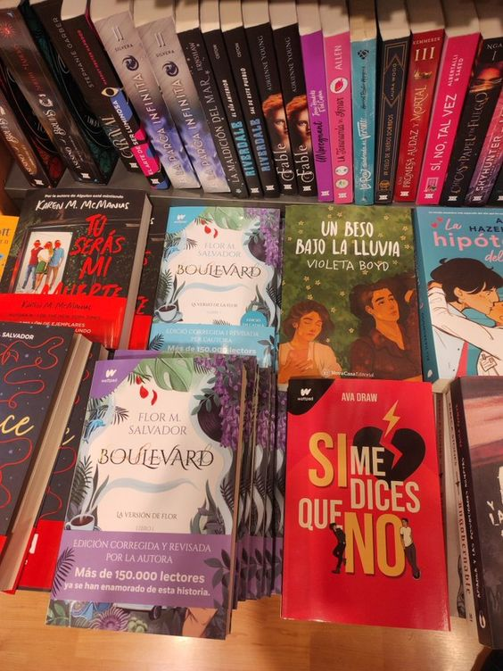
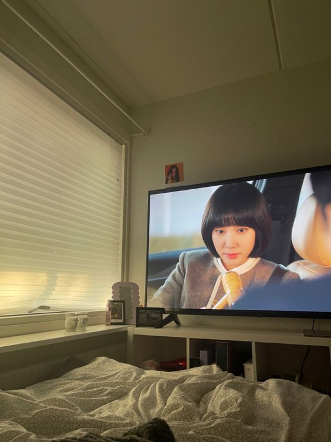
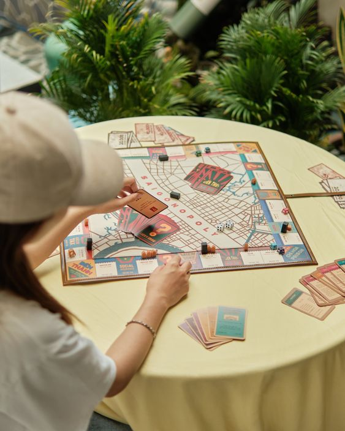

Escuchar música
Me encanta escuchar música, especialmente de Louis Tomlinson y One Direction.
Dato curioso:
Louis Tomlinson es el único artista en la historia de Spotify que ha logrado tener 100 millones de reproducciones de 5 álbumes diferentes.
Leer libros
Disfruto mucho leer libros, ya sean físicos o en línea.
Dato curiosos sobre leer libros:
Algunos estudios sugieren que las personas tienden a concentrarse mejor y retener más información cuando leen libros físicos en comparación con los libros electrónicos.
Jugar videojuegos
Me gusta jugar videojuegos como Sims 4, Call Of Duty, y PUBG MOBILE.
Ver kdramas
Disfruto ver kdramas, especialmente los tristes y de romance.
Dato curioso sobre los kdramas:
Los kdramas abarcan una amplia gama de géneros, incluyendo romance, comedia, acción, thriller, fantasía y ciencia ficción, lo que los hace atractivos para una variedad de audiencias.
Jugar juegos de mesa
Me encanta jugar juegos de mesa con amigos y familia.
Dato curioso sobre jugar juegos de mesa:
Jugar juegos de mesa puede mejorar diversas habilidades cognitivas, como la memoria, la concentración y el pensamiento estratégico, así como fomentar habilidades sociales como la comunicación y la cooperación.
Los gatos
Adoro a los gatos. Son animales fascinantes y muy cariñosos.

Dato curioso sobre los gatos:
Los gatos tienen una habilidad notable llamada 'reflejo de enderezamiento aéreo', que les permite girar en el aire y aterrizar sobre sus patas desde alturas impresionantes.